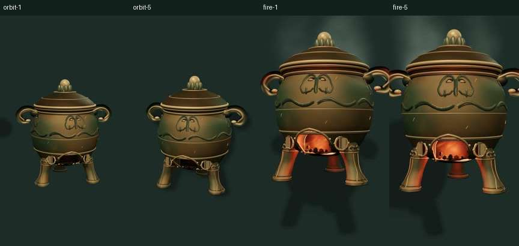
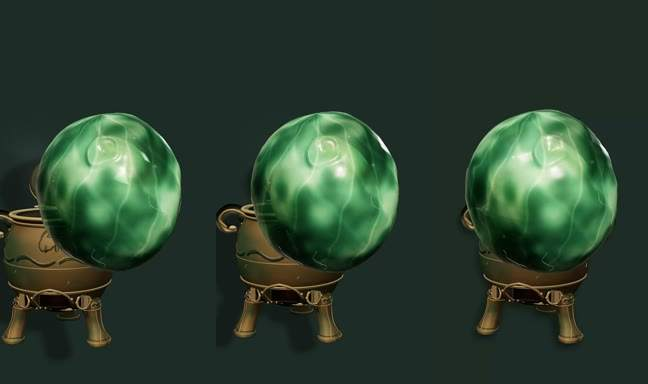

一炉一世界 · 三维运镜
23秒，实际丹炉环绕、低机位炉火、开炉与丹药跟随。原生1080×1920，独立Three.js摄影机，不裁切放大。原创配乐、普通话旁白及本炉真实采集的游戏音轨。
首轮机位抽帧

修订后成丹跟随镜头

游戏原声较弱，源Opus音频出现一处解析警告；最终MP4完整解码通过。三段原生采样29.92、29.94、26.19fps。首炉选药与神识未包含在本次摄影机样片；英文和繁中导演版尚未制作。本页为审美验收，未投放社交平台。
三语首炉全过程